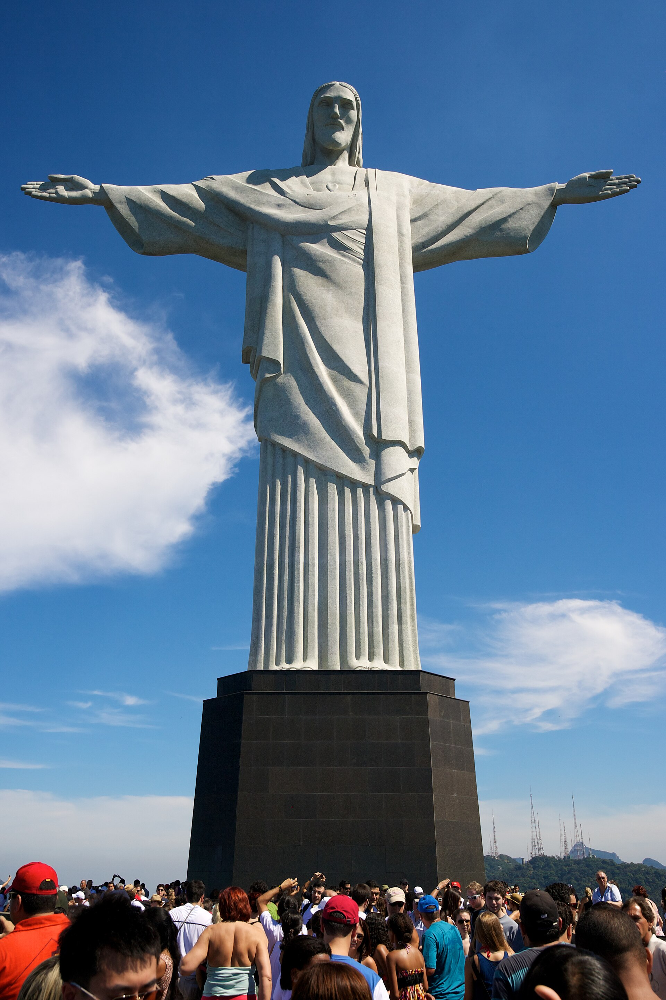
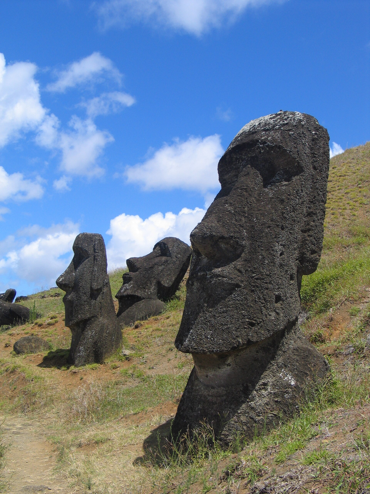
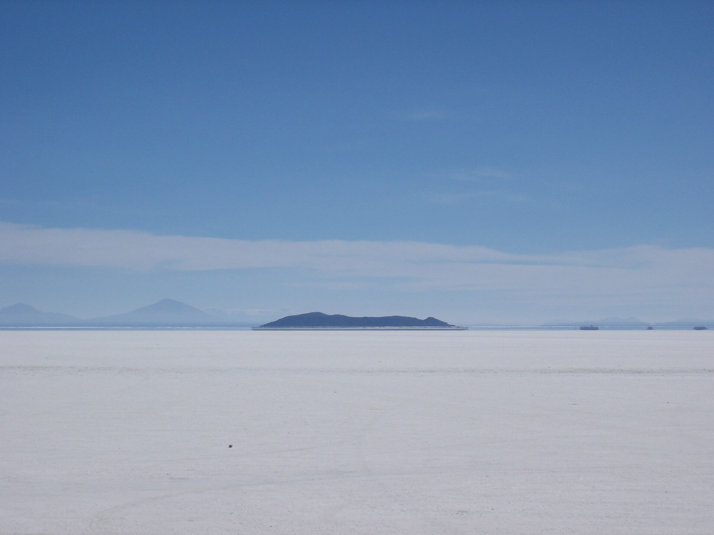
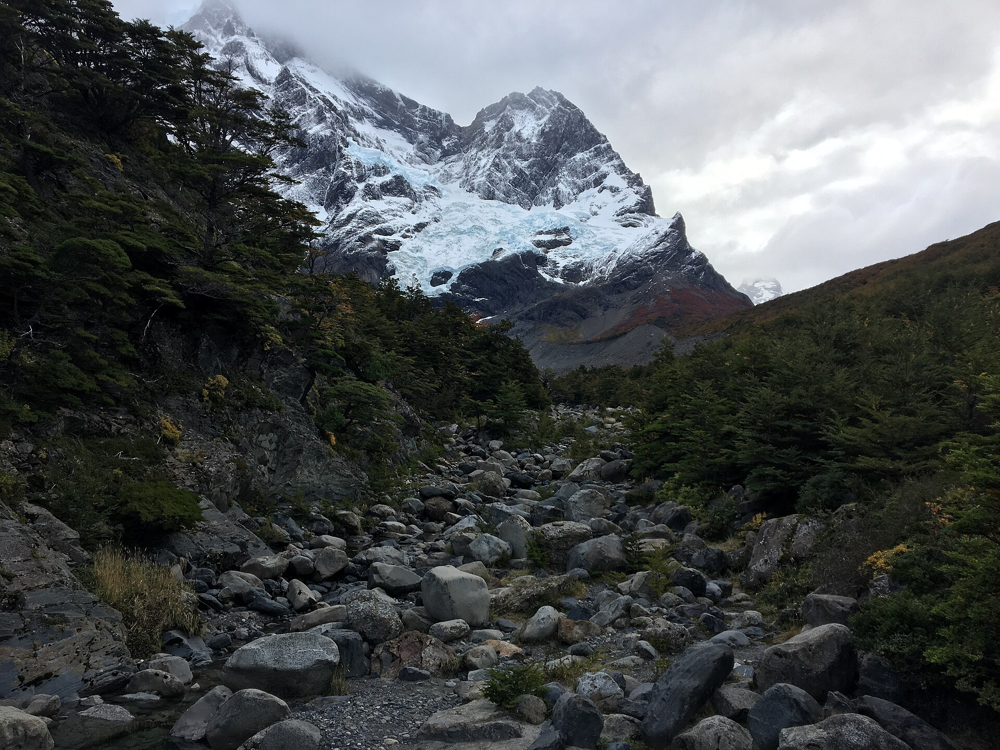
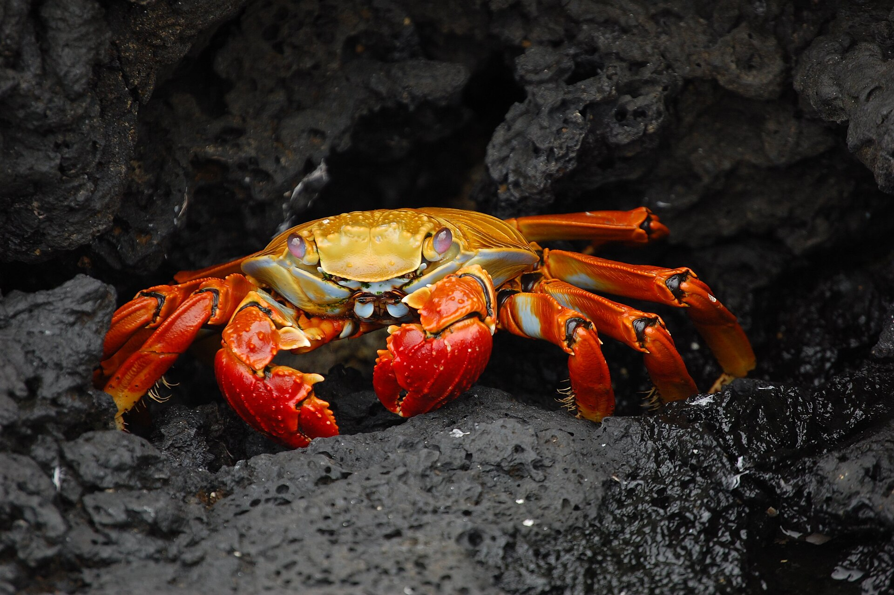

Überblick
Wahrzeichen Südamerikas verbinden Hochgebirge, Regenwald, Salzflächen, Vulkaninseln und koloniale wie indigene Symbolbauten zu einem Bildrepertoire, das weit über einzelne Staaten hinausreicht. In der physischen Geografie ist Südamerika der viertgrößte Kontinent: Anden im Westen, Amazonasbecken im Norden und Zentrum, Atlantikküste im Osten, Patagonien und Feuerland im Süden. Was als ikonisch gilt, entsteht aus Inka-Erbe und Kolonialgeschichte, aus UNESCO-Listen, aus Wissenschaftsreisen (Galápagos) und aus massenhaftem Tourismus.
Die sieben hier vorgestellten Orte decken unterschiedliche Raumtypen ab: die Inka-Bergstadt Machu Picchu, die Christusstatue Cristo Redentor über Rio de Janeiro, die Grenzfalllandschaft der Iguaçu-Wasserfälle, die polynesischen Moai auf Rapa Nui (geografisch im Südostpazifik, politisch zu Chile gehörig und in kontinentalen Überblickswerken oft mit Südamerika verknüpft), den bolivianischen Salar de Uyuni, die patagonischen Torres del Paine und die ecuadorianischen Galápagos-Inseln. Die Auswahl ist beispielhaft. Sie folgt verbreiteter Ikonografie, nicht einer Hierarchie aller bedeutsamen Landschaften – Iguazú und Amazonas, Atacama und Aconcagua, Quito oder Buenos Aires könnten ebenso stehen.
Gemeinsam ist vielen dieser Orte hohe mediale Sichtbarkeit und die Spannung zwischen Schutz und Besuch. Indigene und lokale Bedeutungen – Quechua- und Aymara-Räume in den Anden, Rapa-Nui-Kultur, Kichwa und weitere Gruppen in Ecuador – dürfen nicht hinter Postkartenmotiven verschwinden. Wahrzeichenlisten spiegeln oft europäische und nordamerikanische Bildmärkte; lokale Prioritäten können andere sein. Quantitative Angaben zu Höhe, Fläche oder Besucherzahlen bleiben an gängige Nachschlagewerke und Behördenquellen gebunden. Der Artikel skizziert Lage, Geschichte und geografische Bedeutung und verweist auf belastbare Quellen. Wer Südamerika nur über den Amazonas denkt, verfehlt Hochland und Patagonien; wer nur Andenruinen zählt, verfehlt ozeanische und urbane Ikonen.
Physisch spannen die Wahrzeichen von über 3.000 Metern Höhe im Altiplano und den Anden bis zum Meeresspiegel an Atlantik und Pazifik. Kulturell reichen sie von vorkolumbischen Ritual- und Herrschaftslandschaften bis zu christlich-kolonialen und modernen Nationalsymbolen. Diese Spannweite ist typisch für Südamerika: Extreme Reliefenergie, Biodiversität und eine Geschichte überlagerter Herrschaftsordnungen erzeugen viele „erste Bilder“ – und die Pflicht, sie kontextreich zu erzählen. Der folgende Überblick hält die Einträge bewusst knapp und quellengebunden.
Die Wahrzeichen
Machu Picchu
Machu Picchu liegt auf einem Bergkamm über dem Urubamba-Tal in den peruanischen Anden, nordwestlich von Cusco. Die Anlage aus dem 15. Jahrhundert gilt als herausragendes Zeugnis der Inka-Architektur: Terrassen, Tempel, Wohnquartiere und wassertechnische Systeme sind in steile Hänge und Granitfelsen eingefügt. Seit 1983 ist das Historische Heiligtum von Machu Picchu UNESCO-Weltkulturerbe (Kultur und Natur). Die genaue Funktion – königlicher Landsitz, rituelles Zentrum, beides – wird in der Forschung weiterhin diskutiert; unstrittig ist die technische Meisterschaft von Trockenmauerwerk und Landschaftseinbindung.
Für die Außenwelt „wiederentdeckt“ wurde der Ort 1911 durch Hiram Bingham, der ihn international bekannt machte; lokale Kenntnis und Nutzung waren älter. Spanische Eroberung und Kolonialzeit hatten die Anlage weitgehend aus europäischen Karten verschwinden lassen. Heute ist Machu Picchu eines der meistbesuchten Ziele Perus; Zugang, Ticketkontingente und der Schutz vor Erosion und Übernutzung sind Daueraufgaben. Geografisch verkörpert der Ort die Anden als Kulturraum großer Höhe: knapper Raum, Terrassenfeldbau, sakrale Landschaft und die Verbindung von Cusco-Region und Amazonas-Osthang. Für Quechua-Nachfahren und die peruanische Erinnerungskultur bleibt er lebendiges Erbe, nicht nur Ruinenkulisse. Die Inka-Straßen und die Verbindung zum Vilcabamba-Raum machen deutlich, dass Machu Picchu kein isoliertes „Nest“ war, sondern Teil eines größeren Herrschafts- und Ritualnetzes. Heutige Managementpläne versuchen, Tageshöchstzahlen und Wegführung so zu steuern, dass Substanz und Würde des Ortes erhalten bleiben. Terrassen und Hydrauliksysteme zeigen praxisnahe Anpassung an Steilheit und Niederschlag; sie sind Lehrstücke andiner Agrartechnik ebenso wie monumentale Kulisse.
Cristo Redentor

Der Cristo Redentor (Christus der Erlöser) thront auf dem Corcovado über Rio de Janeiro. Die Art-déco-Statue aus Stahlbeton mit Seifenstein-Verkleidung wurde 1931 eingeweiht; sie ist rund 30 Meter hoch, mit Sockel deutlich höher, die Armspannweite liegt bei etwa 28 Metern. Entworfen wurde sie unter maßgeblicher Beteiligung brasilianischer und französischer Künstler und Ingenieure (u. a. Heitor da Silva Costa, Paul Landowski). Seit der Einweihung prägt sie die Silhouette der Stadt zwischen Meer, Zuckerhut und Vierteln der Guanabara-Bucht.
Als Wahrzeichen steht Cristo Redentor für brasilianschen Katholizismus, für die Selbstdarstellung Rios und – seit Aufnahme in populäre „Weltwunder“-Listen – für globales Tourismusmarketing. Geografisch markiert der Corcovado einen Ausläufer des Küstengebirges über einer der größten Metropolregionen Südamerikas: soziale Ungleichheit, favelas und Nobelviertel liegen im selben Blickfeld wie Zuckerhut und Strände. Zahnradbahn und Straßen erschließen den Gipfel; starke Besucherzahlen verlangen Organisation und Naturschutz im umgebenden Nationalpark Tijuca. Die Statue ist damit weniger „Naturwunder“ als religiös-urbanes Symbol – und ein Beispiel dafür, wie ein einzelnes Bauwerk eine ganze Küstenmetropole ikonografisch bindet. Bei Nacht beleuchtet, ist die Figur Teil der Stadtmarke Rios und der globalen Bilder von Karneval und Copacabana – geografisch aber vor allem ein Hochpunkt über einer dicht besiedelten, sozial gespaltenen Küstenmetropole am Atlantik.
Iguaçu-Wasserfälle

Die Iguaçu-Wasserfälle (portugiesisch Iguaçu, spanisch Iguazú) liegen am Iguaçu-Fluss nahe dessen Mündung in den Paraná, an der Grenze zwischen Brasilien (Paraná) und Argentinien (Misiones). Hunderte Einzelfälle bilden eine der eindrucksvollsten Kataraktlandschaften der Erde; der Teufelsschlund (Garganta del Diabo / Garganta do Diabo) ist der dramatischste Abschnitt. Fallhöhen erreichen am Teufelsschlund Größenordnungen um 80 Meter; die Breite des Systems erstreckt sich über Kilometer. Nationalparks auf beiden Seiten (Iguaçu / Iguazú) sind UNESCO-Weltnaturerbe und schützen Regenwald und Flusslandschaft.
Die Fälle entstehen, wo der Iguaçu über eine Basaltstufe stürzt – Relikt vulkanischer Plateaus Südbrasiliens. Wasserführung schwankt stark mit Niederschlag und Jahreszeit; Trockenphasen und Hochwasser verändern das Bild. Tourismus (Stege, Bootstouren) ist auf beiden Seiten Wirtschaftsfaktor und Belastungsquelle. Geografisch stehen Iguaçu für den Übergang von Atlantischem Regenwald zu großen Stromsystemen und für eine Grenzlandschaft, in der Schutzgebiete Staatsgrenzen überschreiten. Im Vergleich zu Niagara sind Höhe und Staffelung der Fälle anders; die Ikonografie Südamerikas setzt Iguaçu oft als Gegenstück zu andinen Hochlandmotiven. Die Dreiländerecke mit Paraguay (nahe der Paraná-Mündung) unterstreicht die geopolitische Lage: große Staudämme flussabwärts und Tourismus flussaufwärts teilen sich dasselbe Gewässersystem und machen Iguaçu zu einem Labor für Grenzökologie und Wassernutzung.
Moai auf Rapa Nui

Die Moai sind monumental gemeißelte Steinfiguren auf Rapa Nui (Osterinsel) im Südostpazifik. Die Insel gehört politisch zu Chile und wird in vielen geografischen Überblicken dem südpazifischen Rand Südamerikas zugeordnet, kulturell ist sie polynesisch. Rund 900 Moai sind bekannt; die meisten stehen oder lagen an Zeremonialplattformen (ahu) und blicken häufig landeinwärts. Sie wurden aus vulkanischem Tuff (vor allem am Rano Raraku) und anderen Gesteinen gearbeitet; Transport und Aufrichtung beschäftigen Archäologie und experimentelle Forschung bis heute.
Die Moai entstanden in vorkolonialer Zeit im Rahmen der Rapa-Nui-Gesellschaft; genaue Datierungen einzelner Figuren variieren, häufig genannt werden Jahrhunderte etwa vom 13. bis zum 16. Jahrhundert. Europäische Kontakte ab dem 18. Jahrhundert, Versklavung, Mission und ökologische Krisen veränderten die Insel tiefgreifend. Der Rapa-Nui-Nationalpark ist UNESCO-Weltkulturerbe. Für heutige Rapa-Nui-Communities sind Ahnenfiguren und ahu lebendiges kulturelles Erbe; Tourismusregeln und Denkmalpflege sollen Respekt und Schutz sichern. Als Wahrzeichen stehen die Moai für polynesische Seefahrt, isolierte Inselökologie und die globale Bilderwelt „Osterinsel“ – jenseits vereinfachender Kollaps-Mythen. Die isolierte Lage Tausende Kilometer vor der chilenischen Küste erklärt endemische Ökologie ebenso wie die besondere Verletzlichkeit durch eingeschleppte Arten und Kreuzfahrttourismus; Schutzregeln und lokale Mitbestimmung bleiben zentral.
Salar de Uyuni

Der Salar de Uyuni im bolivianischen Altiplano ist die größte Salztonebene der Erde. Nach gängigen Angaben bedeckt er eine Fläche in der Größenordnung von über 10.000 Quadratkilometern. In der Trockenzeit erscheint er als weiße, nahezu ebene Kruste; in der Regenzeit kann eine dünne Wasserschicht den Himmel spiegeln und das Motiv zum fotografischen Wahrzeichen machen. Unter und in der Salzkruste lagern Solevorkommen, die für Lithium und andere Rohstoffe wirtschaftlich bedeutsam sind – mit entsprechenden Debatten um Abbau, Umwelt und indigene Rechte.
Geologisch ist der Salar Relikt vorgeschichtlicher Seen im Hochland zwischen Ost- und Westkordillere. Die Höhe liegt typischerweise um 3.600 Meter; das Klima ist kalt, trocken und von starker Sonneneinstrahlung geprägt. Orte wie Uyuni und Colchani dienen als Ausgangspunkte für Touren zu Isla Incahuasi (mit Riesensäulenkakteen) und zu den farbigen Lagunen weiter südwestlich. Als Wahrzeichen Südamerikas steht der Salar für extreme Hochlandtrockenheit, für die visuelle Klarheit der Altiplano-Geometrie und für die Verschränkung von Tourismus und Rohstoffgeografie. Besuch erfordert Vorsicht gegenüber Höhe, Wetter und fragilen Krustenbereichen. Die Ebene dient auch als Referenzfläche für Satellitenkalibrierung, weil sie groß, flach und hell ist – ein ungewöhnlicher Brückenschlag zwischen Hochlandgeografie und Fernerkundung.
Torres del Paine

Der Nationalpark Torres del Paine in der chilenischen Region Magallanes (Patagonien) ist berühmt für die granitenen Torres und Cuernos, für Gletscherzungen, türkisfarbene Seen und weite Steppen. Der Park wurde 1959 eingerichtet und 1978 als UNESCO-Biosphärenreservat anerkannt. Er liegt im Übergang zwischen den südlichen Anden und den windreichen Ebenen Ostpatagoniens; Westwinde, rasche Wetterwechsel und starke Niederschlagsgradienten prägen das Klima.
Die namensgebenden Türme sind Relikte magmatischer Intrusionen, freigelegt durch Erosion und Eis. Wanderwege wie W- und O-Circuit gehören zu den bekanntesten Trekkingrouten Südamerikas; Guanakos, Kondore und – seltener sichtbar – Pumas stehen für die Fauna. Waldbrände durch Fahrlässigkeit haben in der Vergangenheit große Schäden verursacht; Parkregeln zu Feuer, Müll und Wegbindung sind streng. Geografisch verkörpert Torres del Paine das Bild Patagoniens: Eis, Wind, isolierte Bergmassive und dünne Besiedlung. Als Wahrzeichen konkurriert es mit dem argentinischen Fitz-Roy-/Chaltén-Massiv, bleibt aber chilenisches Kernsymbol der Südanden. Die Nähe zum Südlichen Eisfeld und zu Schiffrouten durch den Pazifiksüden bindet den Park in die größere Geografie Magallans und der Drake-Passage Richtung Antarktika ein. Für viele Besuchende ist Torres del Paine das visuelle Synonym für „Patagonien“ schlechthin. Wind, Eis und Trekkingrouten prägen die Wahrnehmung nachhaltig.
Galápagos-Inseln

Die Galápagos-Inseln liegen im Pazifik rund um den Äquator, politisch zu Ecuador gehörig. Sie sind vulkanischen Ursprungs und berühmt für endemische Arten: Riesenschildkröten, Meerechsen, Flugunfähige Kormorane, Darwin-Finken und viele weitere. Charles Darwin besuchte den Archipel 1835 während der Reise der Beagle; seine Beobachtungen flossen später in die Evolutionstheorie ein. Der Galápagos-Nationalpark und die spätere Erweiterung um Meeresgebiete gehören zum UNESCO-Welterbe (seit 1978, erweitert 2001).
Geografisch erklären Isolation, unterschiedliche Inselalter und Meeresströmungen (u. a. kühler Humboldt-Einfluss) die besondere Biogeografie. El Niño-Jahre können Nahrungsnetze stark stören. Tourismus und Einwanderung belasten empfindliche Ökosysteme; Quoten, zertifizierte Guides und strikte Landungsregeln sollen Schäden begrenzen. Als Wahrzeichen Südamerikas – obwohl ozeanisch – stehen die Galápagos für Wissenschaftsgeschichte, Artenschutz und die Fragilität isolierter Inselwelten. Sie erinnern daran, dass kontinentale Wahrzeichenlisten maritime Räume einschließen müssen, wenn sie die Region vollständig denken. Forschende Stationen und die Charles-Darwin-Stiftung dokumentieren seit Jahrzehnten Bestände und Bedrohungen; die Inseln bleiben ein Prüfstein dafür, ob Wissenschaftstourismus und Schutz langfristig vereinbar sind. In der kontinentalen Erzählung verkörpern sie den pazifischen Gürtel Ecuadors; ohne sie bliebe die Wahrzeichenliste auf Festlandmotive verkürzt.
Quellen
- UNESCO World Heritage Centre – Historic Sanctuary of Machu Picchu: https://whc.unesco.org/en/list/274/
- Encyclopaedia Britannica – „Machu Picchu“: https://www.britannica.com/place/Machu-Picchu
- Encyclopaedia Britannica – „Christ the Redeemer“: https://www.britannica.com/topic/Christ-the-Redeemer
- UNESCO / New7Wonders – Cristo Redentor (Hintergrund): https://world.new7wonders.com/wonders/cristo-redentor-1931-rio-de-janeiro-brazil/
- UNESCO World Heritage Centre – Iguazu National Park: https://whc.unesco.org/en/list/303/
- Encyclopaedia Britannica – „Iguacu Falls“: https://www.britannica.com/place/Iguacu-Falls
- UNESCO World Heritage Centre – Rapa Nui National Park: https://whc.unesco.org/en/list/715/
- National Geographic – Easter Island moai overview: https://www.nationalgeographic.com/history/article/everything-to-know-about-easter-islands-iconic-statues
- Encyclopaedia Britannica – „Salar de Uyuni“: https://www.britannica.com/place/Salar-de-Uyuni
- UNESCO MAB – Torres del Paine: https://www.unesco.org/en/mab/torres-del-paine
- CONAF – Parque Nacional Torres del Paine: https://www.conaf.cl/parque_nacionales/parque-nacional-torres-del-paine/
- UNESCO World Heritage Centre – Galápagos Islands: https://whc.unesco.org/en/list/1/
- Encyclopaedia Britannica – „Galapagos Islands“: https://www.britannica.com/place/Galapagos-Islands
- Encyclopaedia Britannica – „South America“ (Kontext): https://www.britannica.com/place/South-America